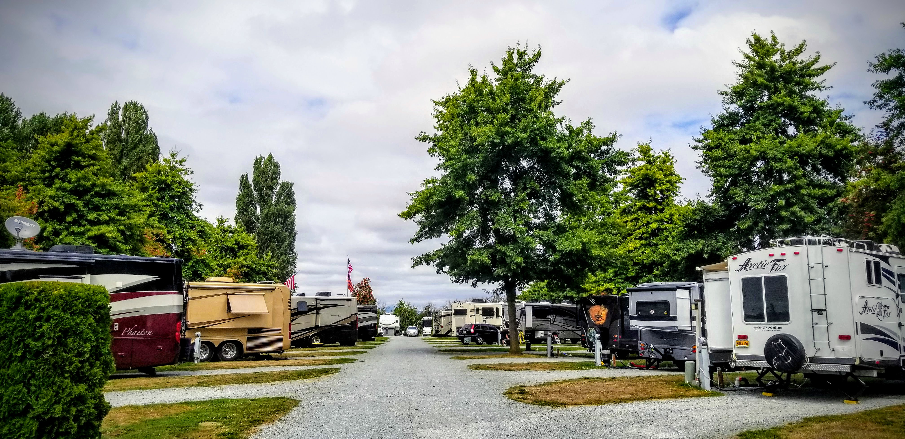

The park is quiet and fits perfectly into the Pacific Northwest complimenting Skagit Valley’s farmland and tulip fields. The park is close to downtown Mount Vernon where you can find delicious food, handcrafted beer, and take a walk along the Skagit River. It offers easy access to nearby Anacortes, the Ferries, and the surrounding San Juan Islands.

The park offers 81 full hookup sites with electricity, water, sewer, cable, and wifi throughout the park. Each space has plenty of room for your home on wheels. Overflow sites available if needed. Pets are welcome upon approval and there are grassy patches and a dog area to play.